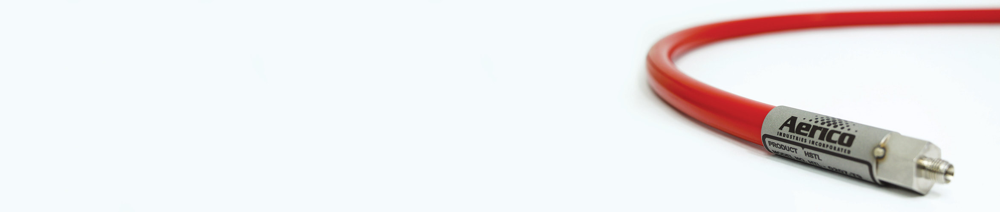

Aii-HTL-7 // The 7th Generation
As a continuing effort towards product improvement, we at Aerico Industries would like to formally announce a seventh generation of our signature Aii-HTL heated chemical sampling line.
Temperature Rating:
- 130-900f (55-480c)
Available in Sizes:
- 40ft., 100ft., 150ft.
*custom lengths available at request, though additional charges may apply
The 7th Generation // How We've Improved
In an effort to more thoroughly respond to the needs of our customers, Aerico Industries continuously collects customer feedback, evaluates it, and enhances product specifications and performance accordingly. Over the last 24 years of providing heated chemical sampling lines to Government agencies and private industry alike, Aerico’s HTL sampling lines have evolved through seven generations of revision. With each revision, we have worked to implement feedback and enhance our products overall performance characteristics.
This most recent enhancement of the HTL product has been implemented to alleviate a concern from customers relating to an emitted odor from indoor usage of the sampling lines, and extensive cleaning as a result of long periods of line storage. Both issues have a common cause, which resides in the exterior rubber jacket. Past revisions of sample lines utilized an EPDM rubber jacket material, which being a natural product, is subject to a host of impurities which may be inherently part of the rubber itself. As a result, Aerico has developed a synthesized neoprene/PVC rubber jacket material, which will replace the natural EPDM rubber. The synthesized material is much more consistent in its composition, and therefore more controllable. The exterior finish of the new material is red and is definitely recognizable in contrast to the EPDM rubber jacket.
The performance characteristics of the new generation HTL sample lines are very similar to those of the EPDM model. The difference, however, may be appreciated during chemical cleaning, especially after long periods of storage. The new generation HTL requires only a fraction of the time required to clean and stabilize, when compared to its EPDM predecessor.
Additionally, due to greater thermal insulating properties of the neoprene/PVC material, the outside temperature of the new sample line will feel slightly cooler to the touch when compared to the EPDM predecessor. By virtue of this property, the wattage of the heating element has been reduced, thereby causing the heaters to consume less electrical power and produce a more efficient system.
Aerico Industries has produced multiple versions with this new design that have been tested extensively with our end-users. Together, we have collected and analyzed many chromatograms, each associated with a different technical permutation of the sample line under test. After nearly two years of research and testing, the seventh generation of Aerico’s HTL family of heated chemical sample lines has been optimized and put into production.
Aerico has a full line of heated and non-heated transfer lines that provide a multitude of solutions to cater to temperature control, AC/DC voltage regulations, various vapor or particle measurement. We also utilize a wide range of materials to produce outer jacket protection, ranging from silicon to EPDM, as well as custom metal jackets.
Aii-HTL-HT // High Temperature Silco Steel Transport Tube
Aii-HTL-MR/DC // Multi-Range DC Volatage HTC
Aii-HTL-MB // Multi-Bundle Tube HTC
Aii-HTL-EDT // EDT Carrier Line